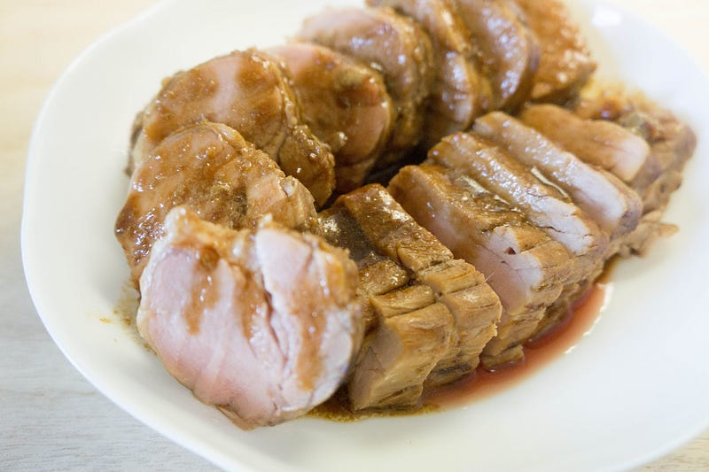
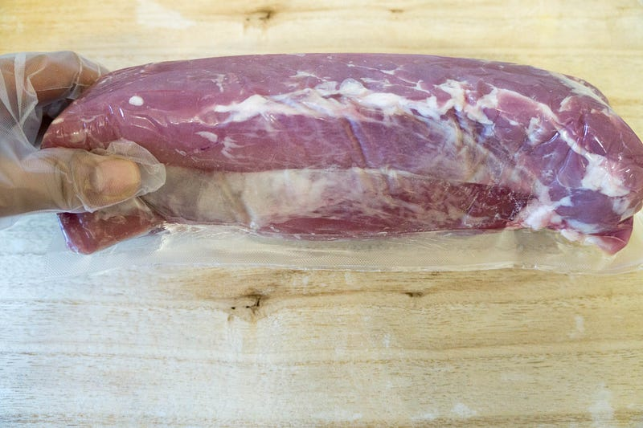
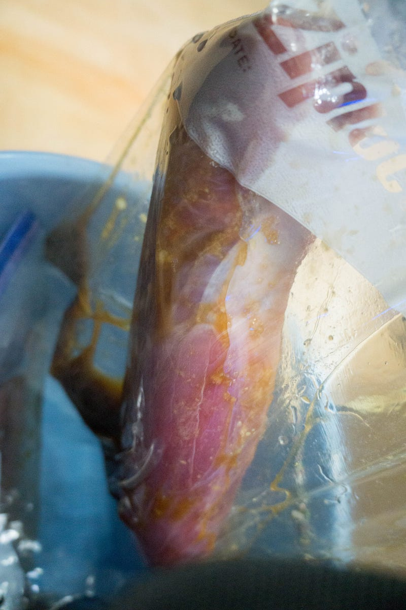
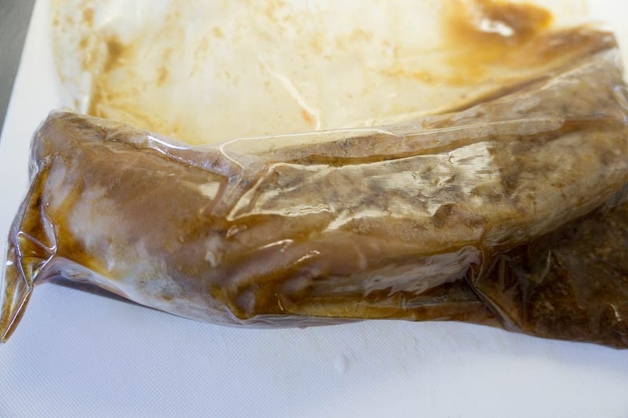
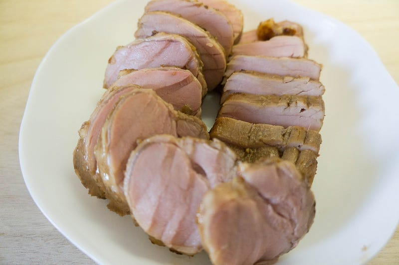
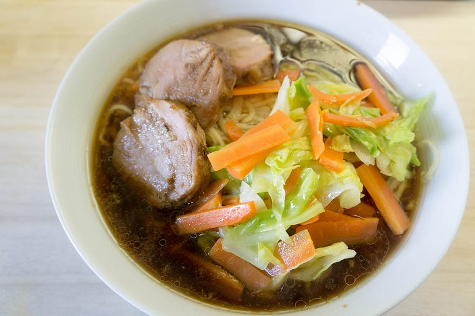

豚ヒレをanovaでチャーシュー代わりにする
豚ヒレをanovaでチャーシュー代わりにする

チャーシューといえば豚肩バラ肉などで作るのが一般的だろう。しかしいくらanovaでも肩バラ肉はスジが多くて少し時間がかかる。そしてお昼にラーメンを食べようと思いついたのは午前7時過ぎの事であった。じゃあ、ということでより素早くフワフワ食感を実現できる豚ヒレでそれっぽいものを作る事にする。
New: Anova Precision Cooker - WIFI 2nd Gen (900 Watts)が卓上IHクッキングヒーターストアでいつでもお買い得。当日お急ぎ便対象商品は、当日お届け可能です。アマゾン配送商品は、通常配送無…amzn.to
前回はこちら
子供がいる家はどこでもそうだと思うが、常にご飯の事を考えていないといけない。大人だけの家だったら、何にも用意して無くても思いついてすぐちょっと近所の居酒屋に行ったり、諦めてファーストフード・ジャンクフードで済ませるといったことができるが… 子供。あいつらは急に行動できないし、下手なものを食べさせ続けるわけにもいかない。なので子持ちは常にご飯の事を考えている。
そういう理由で今朝も朝食が終わった瞬間にお昼と夕飯について考え始めていた。実は頂き物の尾道ラーメンというのがある。賞味期限もあるので早いところ始末しないといけない。しかし素ラーメンも悲しいので具をどうにかしたい。野菜は適当なものがある。肉は… ない。じゃあ作るか、というところから話は始まる。
どうせなら柔らかいチャーシューを作りたいが、anovaさんの低温調理だと、スジが多い肉だと結構時間がかかる。例えば、ラム肩ブロック肉なんかは10時間近くやる。
今回なんかやろうと思いついたのが午前7時すぎなので、昼食の時間までは、なんやかんや支度の時間も入れると4時間くらいしかない。諦めるところだったが、僕らは経験から知っていたのです： 豚ヒレなら3〜4時間でフワフワになると。
そういうわけで買ってきたのは豚ヒレ約1kg、1300円也。一食でこれの1/4~1/3くらいしか使わないし、豚ヒレ安い。

今回はチャーシュー風味にするので、味付けのためのタレと一緒に低温調理する。尾道ラーメンはよく知らないけど、南のほうだからきっと甘い醤油ラーメンだろ、って勝手に妄想して、甘辛風味を目指して めんつゆ、醤油、塩、砂糖、以前の残り物のチューブのショウガとニンニクをまぜて、気持ち濃いめのタレを作成し、それに漬けた状態でジップロック。


58℃で4時間。

軽くまわりをやきつけて、残っていた汁を煮詰めてタレにして。

ラーメンに載せて、ほい、できあがり。ラーメンが美味しくなさそうなのは写真の腕が悪いからです。すみません。
チャーシューの厚さは8mmくらいの厚切り、でもフワフワなので柔らかい。調理のタイミングによる時間差でチャーシューが少し冷めてしまっていたけど、ラーメンの汁に浸かっているうちにチャーシューが良い感じで温かくなり、うまい！
豚ヒレ肉は食感以外はわりとつまらない味の肉になってしまうのだけど、ラーメンに入ることによって、良い感じのハーモニーになっている。これが出るラーメン屋、俺なら行きたい。その場合、チャーシュー麺はこのチャーシューが4枚で1000円でお願いします。
anovaでやる豚ヒレチャーシュー、おすすめです。余りは冷凍してまた次の機会に。
最後にこのエントリを書くのにぐぐってみたが、なるほど、尾道ラーメンとはわりとシンプルなラーメンなんだな…